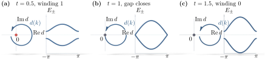

Advanced Quantum Materials 2027 · All lectures · Lecture notes
Session 3. Topological Band Structure Theory
3.9 The SSH model as a minimal one-dimensional topological insulator
We now build the simplest model that shows this physics explicitly, which is the Su-Schrieffer-Heeger (SSH) chain. It looks too simple to be useful, but we should take it seriously, also because the simplest model for a topological superconductor, the Kitaev chain, is exactly this model written in terms of Majorana operators.
We take a one-dimensional lattice with two sites per unit cell, \(A\) and \(B\), and two hopping amplitudes. The first one is an intracell hopping \(t\), within a unit cell, and the second one is an intercell hopping fixed to \(1\), between neighboring unit cells. Let us first take the extreme limit in which the intracell hopping dominates, \(t \gg 1\), so that the chain is fully dimerized with alternating bonds. Strong bonds of strength \(t\) couple the sites \((0,1)\), \((2,3)\), \((4,5)\), … and the coupling between \((1,2)\), \((3,4)\), …is negligible. Each dimer is then an isolated two-level system with bonding and antibonding eigenstates at energies \(\pm t\). The spectrum of the whole chain is this pair of levels repeated once for each dimer, and there is nothing at zero energy.
Now let us take the opposite limit, \(t \to 0\), in which the strong bonds are the intercell ones and the dimer pattern is shifted by one site. We leave the first site uncoupled, so that it is a dangling site, we couple \((1,2)\), \((3,4)\), …, and we also leave the last site dangling. In the bulk this looks the same as the previous chain, since it has the same alternating dimer pattern shifted by one site, but the two ends are qualitatively different, because each end now has a site that is not coupled at all. When we diagonalize this chain, we obtain the same bonding and antibonding pairs at \(\pm 1\) in the bulk, and also two states pinned exactly at zero energy, one localized at each end. Figure 3.3 shows the two chains side by side together with their spectra.

This is the minimal example of a topological phase. The fully dimerized chain of the first case is the trivial phase, which is gapped everywhere, including at the ends. The shifted chain of the second case is the topological phase, which is gapped in the bulk but has gapless modes at exactly zero energy at the edges. This construction looks very fine-tuned, and it is, since real chains have hopping between every pair of neighboring sites. The important part is what survives when we remove the fine-tuning. If we turn on a small coupling \(t\) between the sites at the two ends that were decoupled, the zero modes are not removed, as long as \(t\) stays below the bulk hopping strength. Intuitively, for \(t \ll 1\) we weakly couple an isolated zero-energy level to a gapped bulk, and a weak coupling cannot push a level all the way across a finite gap. In a more exact way, this is the deformation argument of Section 3.7 The Hamiltonians at different small \(t\) are topologically equivalent, since they are connected without closing the bulk gap, so the invariant that protects the zero mode at \(t=0\) also protects it when the coupling is finite.
We can make this fully precise with the Bloch Hamiltonian. With intracell hopping \(t\) and intercell hopping normalized to \(1\), the Hamiltonian in momentum space in the \((A,B)\) basis is the \(2\times 2\) matrix
\[H(k) = \begin{pmatrix} 0 & d(k) \\ d^*(k) & 0 \end{pmatrix} = (t + \cos k)\,\sigma_x - \sin k\,\sigma_y, \qquad d(k) = t + e^{ik}, \tag{3.5}\]
with eigenvalues \(E_\pm(k) = \pm|d(k)| = \pm\sqrt{1 + t^2 + 2t\cos k}\). The gap closes exactly when \(d(k)=0\), which requires \(t=1\) and \(k=\pi\). This is the topological phase transition point, and it agrees with the qualitative separation between \(t<1\) and \(t>1\) above, since at \(t=0\) the chain is in the limit where the end sites are fully dangling, which is topological, and at \(t=1\) it becomes the fully symmetric gapless chain.
The topological invariant here is the one-dimensional Berry phase that the lower-band Bloch state \(|u_-(k)\rangle\) accumulates as \(k\) goes once around the Brillouin zone, which is called the Zak phase,
\[\gamma = i \oint_{\text{BZ}} \langle u_-(k)|\partial_k u_-(k)\rangle\, dk \pmod{2\pi}. \tag{3.6}\]
Geometrically, \(\gamma/\pi\) counts how many times \(d(k)\) winds around the origin as \(k\) goes from \(0\) to \(2\pi\). From (3.5), \(d(k) = t + e^{ik}\) draws a unit circle centered at \((t,0)\) in the complex plane. This circle encloses the origin exactly when \(|t|<1\), and it does not enclose it when \(|t|>1\). This agrees with everything above, since \(\gamma = \pm\pi\) for \(t<1\), which means one winding, a topological insulator and gapless edge modes, and \(\gamma = 0\) for \(t>1\), which means no winding, a trivial insulator and no edge modes. The value of the Zak phase is in exact one-to-one correspondence with the presence or absence of a zero-energy edge state, and this is the one-dimensional version of the bulk-boundary correspondence of Section 3.7 Figure 3.4 shows this winding together with the bands that it controls, and it shows that the two insulating phases cannot be distinguished from their spectra alone.

This material appears only in the lecture and on the slides, and it has no counterpart in the notebook. The notebook session3.ipynb does not have a dedicated section on the SSH chain, and its numerical exercises start directly from two-dimensional ribbons, which are the quantum Hall and quantum anomalous Hall constructions of Sections 3.6 and 3.10 If you want to see the zero modes and the Zak-phase winding of (3.6) numerically, the direct way is to build by hand the finite chain with \(N\) sites from Section 3.9, following the same tight-binding diagonalization method that we used for the finite islands in session 1. Then you can see how the two eigenvalues close to zero move away from zero as \(t\) is increased above \(1\).